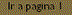

| HOY | |||
| ME | |||
| EXAMINO | DEL | ||
| CURSO | HTML | ||
Ecualización de niveles: Permite ajustar las sombras, los medios tonos y las áreas resaltadas de la imagen de forma individual y precisa.
Ecualizacion local: Permite mejorar el contrastre cerca de los bordes de la imagen y revelar detalles en zonas claras y oscuras.
Proporcion muestra/destino: Permite efectuar correcciones de color en la imagen desplazando los valores de un color de muestra tomado de la imagen, a un color destino seleccionado en un modelo de color.
Curva tonal: Permite el mismo tipo de correcciones generales de tono y color que el filtro Ecualización de niveles, sólo que aquí el control se realiza mediante una curva que muestra el equilibrio entre las sombras, medios tonos y resaltes de la imagen.
Ecualizar automaticamente: Realiza un ajuste automático de las sombras, medios tonos y brillos de la imagen.
Brillo, contraste e intensidad: Permite ajustar los niveles de brillo y contraste igual que en un televisor.
Equilibrio de color: Permite ajustar el equilibrio entre tonos de color en la imagen.
Gamma: Aumenta el nivel de detalle de la imagen ajustando los tonos medios, sin afectar ni a los valores más claros ni a los más oscuros.
Matiz, saturación y claridad: Permite ajustar el tono, la saturación y la luminosidad de la imagen sin afectar al brillo.
Color selectivo: Permite realizar modificaciones del color ajustando el porcentaje de los colores componentes del proceso en una opción de espectro de colores.
Reemplazar colores: Permite sustituir un color de la imagen original por otro color.
Desaturar: Reduce a cero los niveles de saturación de cada color de la imagen convirtiendo el color en tonos de gris.
Matiz de color: Permite realizar de forma visual operaciones de corrección de color mostrando simulaciones de la imagen con varios efectos de corrección de color aplicados.
Tono de color: Muestra simulaciones con varios efectos de mejora de imagen, como el brillo, el contrastre y la saturación.
